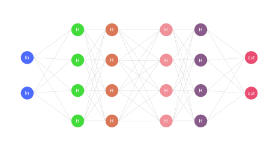

UNDERSTANDING HOW ARTIFICIAL INTELLIGENCE WORKS
Understand the models, tools, and algorithms shaping the future. Clear guides to how AI actually works and how to use it safely.
Join the 47 Million Software Developers Worldwide Enter the AI Race
The tech landscape is shifting faster than ever. Don't get left behind learn to integrate powerful models, automate complex workflows, and build the next generation of intelligent applications today.
Neural Agents
Self Learning models that adapt to your data infrastructure. Automate complex decision-making.
Active Models
Processing Speed
Self Learning models that adapt to your data infrastructure. Automate complex decision-making.
Confidence
Natural Language
Control your infrastructure using plain English commands
AI Models: The Engines of Intelligence
A model is the "brain" of an AI system. It is a mathematical representation that applies learned patterns to make predictions, decisions, or generate new content based on massive datasets.
Traditional ML Models:
Analyze existing data to predict outcomes (like forecasting inventory or classifying spam).
Generative AI & LLMs:
Create net-new text, images, or code by predicting what should come next in a sequence.
Algorithms: The Logic of Learning
Algorithms process data to identify patterns and relationships. They are the computational rules that allow a machine to learn without being explicitly hard-coded.
Supervised Learning:
Trains on clearly labeled data to learn exact relationships.
Unsupervised Learning:
Analyzes raw, unlabeled data to find hidden structures or group similar items together.
Reinforcement Learning:
Learns through trial and error, receiving a mathematical "reward" for making the correct sequence of decisions to achieve a goal.
Neural Agents & Tooling: From Chat to Action
AI is moving beyond static text boxes. Agents are autonomous systems that define their own logic to solve complex problems.
Tool Calling:
Giving models the ability to reach out and trigger external functions—like querying a database, searching the web, or pinging an API.
Agent Memory:
Allowing systems to retain context across a long session to handle multi-step workflows independently.
Neural Agents & Tooling: From Chat to Action
AI is moving beyond static text boxes. Agents are autonomous systems that define their own logic to solve complex problems.
Tool Calling:
Giving models the ability to reach out and trigger external functions—like querying a database, searching the web, or pinging an API.
Agent Memory:
Allowing systems to retain context across a long session to handle multi-step workflows independently.
Neural Network Simulator
000,000
- Learning Rate00.3
- ActivationTanh
- RegularizationNone
- Regularization Rate0
- Problem TypeClassification
A neural network simulator is a software tool used to design, test, train, and visualize artificial or biological neural networks without needing to build physical hardware or write complex code from scratch.
